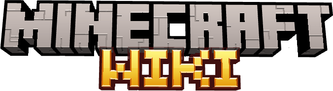
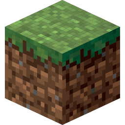

A origem do Creeper
O Creeper surgiu por acidente. Durante o desenvolvimento do jogo, Notch errou as proporções ao criar um porco. Em vez de descartar o modelo, ele o transformou no Creeper.

O Creeper surgiu por acidente. Durante o desenvolvimento do jogo, Notch errou as proporções ao criar um porco. Em vez de descartar o modelo, ele o transformou no Creeper.

O Ender Dragon foi o primeiro chefe oficial do Minecraft e é considerado o principal objetivo do modo sobrevivência.

Os mundos do Minecraft podem chegar a cerca de 60 milhões de blocos de largura, permitindo uma exploração gigantesca.

O diamante é um dos minérios mais valiosos do jogo, mas a Netherite é ainda mais rara e poderosa.

A Mooshroom só aparece naturalmente no raro bioma Mushroom Fields.

Adicionado na versão 1.20, o Cherry Grove trouxe as famosas cerejeiras rosas e se tornou um dos biomas favoritos da comunidade.

Os sons emitidos pelo Enderman são, na verdade, frases em inglês reproduzidas ao contrário e com efeitos.

Grande parte da trilha sonora clássica do jogo foi composta por C418, ajudando a criar a atmosfera tranquila que marcou gerações de jogadores.